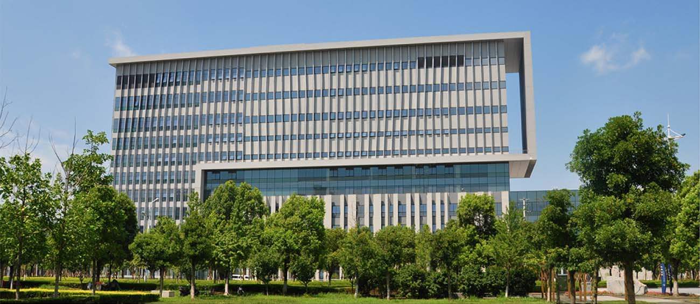

SEU-Monash University Joint Graduate School (Suzhou) (abbreviated below to Joint Graduate School) has been approved by MOE as a sino-foreign co-operative joint school, operating at Dushu Lake Higher Education District, Suzhou, Jiangsu Province.
The Joint Graduate School recruits postgraduate students under the National Graduate Enrollment Plan. The Joint Graduate School will fully utilize academic superiority and educational strengths of SEU as well as learn from Australian educational methods, training models and experience in disciplines such as in information industry, software engineering, municipal transport, and international business, to strive for producing professionals in the up disciplinary fields.
Industrial design is a combination of applied art and applied science to improve the aesthetics, ergonomics, and usability of product , it may also be used to improve the product's marketability and production. The role of an industrial designer is to create and execute design solutions for problems of form, usability, physical ergonomics, marketing, brand development and sales.
The courses promote design practice by combining techniques and media as well as experimental methods. Students will be required to think, communicate, discuss in groups, examine current methods to help developing their design proficiency and design products.